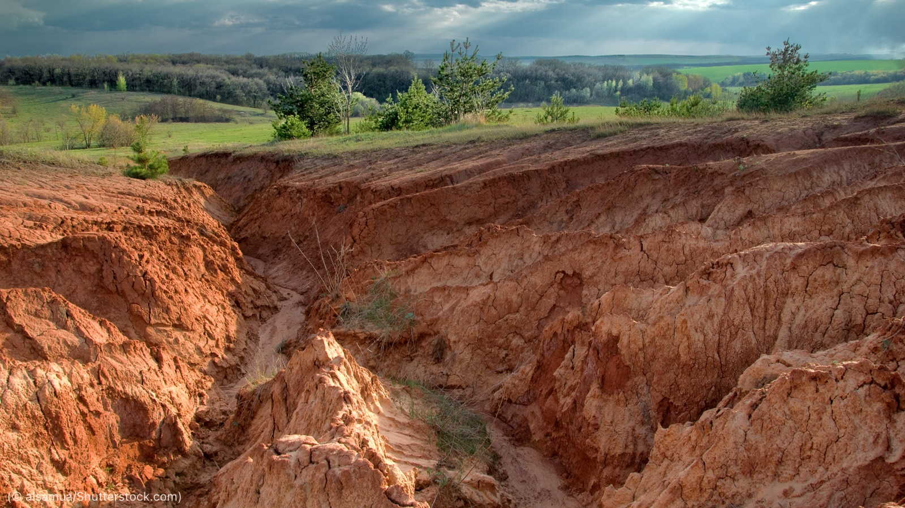
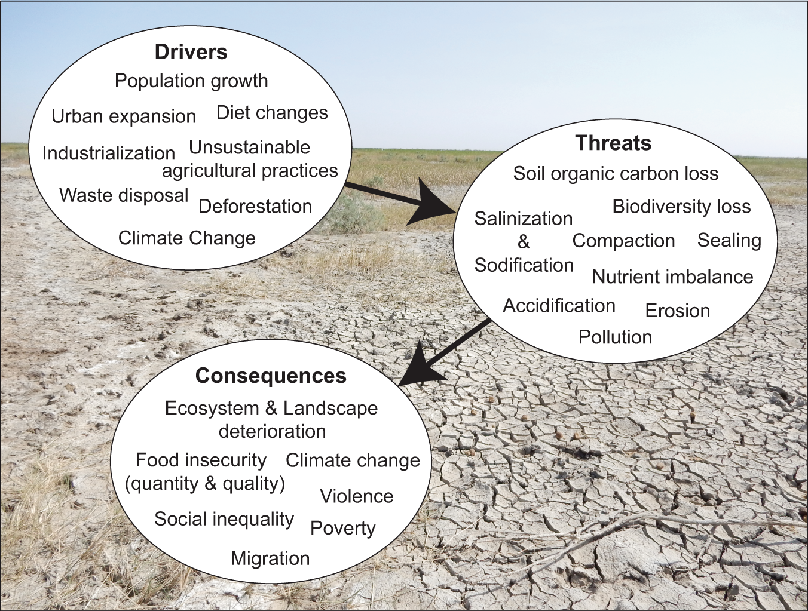
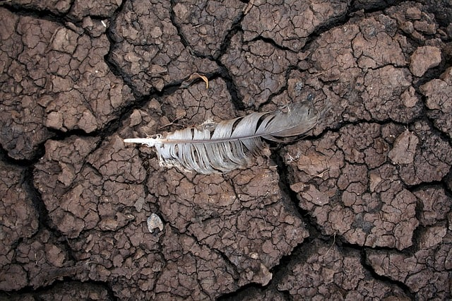

About Soil Degradation
Soil Degradation is a massive issue in the world today. To put simply, soil degradation is the chemical, physical, and biological decline of soil overtime. Whether it be the loss of organic matter or the decline of soil biodiversity, the process is destroying our planet. Soil is the key to all life on Earth; an essential medium that allows life to flourish and grow. Recent data, however, has been illustrating our soil is not what it used to be. An aricle titled, Relationship Between Physical-geographical Factors and Soil Degradation on Agricultural Land, by Bednar et al. states that at least 33% of Earth’s surface has been affected by soil degradation. Essentially, this means that more than a 1/3 of the entire surface of the Earth has been negatively effected due to the loss of equilibrium in stable soil. Land degradation has been further defined as, "a negative trend in land condition, caused by human-induced processes," in a report titled Climate Change and Change in Land. This issue has been exasperated by human processes and it is coming to a point where change needs to happen. The image below shows soil that has been degraded overtime. It is obvious to see that the soil in the image is not fit for organisms to live on. There is a clear lack of nutrients which make it inadequate for argicultural use.

Causes of Soil Degradation
There has been direct and indirect human-induced processes that have caused soil degradation. Human activities such as intensive agriculture, overgrazing, deforestation, and the use of pesticides/fertilizers contribute to soil degradation. These processes decrease organic matter content, nutrient availability, and water retention capacity in the soil. Specifically, one of the most challenging issues in this topic is soil desertification. More about the effects of this phenomenon in the next section.
There are other causes to soil degradation as well. Agricultural activities often depletes soil of important organic matter which then causes nutrient contents of foods produced by that soil to be low. The EU has done research on this topic and they found that, in Europe alone, 2.5 million locations have contaminated soil. Of that 2.5 million 342,000 locations needs immediate revision attention to improve soil health (Bednar 3).
To say soil degradation is a hurdle in today's society is an understatement. Below we have included an image which shows a cause and effect graph of soil degradation. Practices such as population growth drives us to use more Earth's land for agriculture. Some agriculture practices cause for soil organic carbon loss and soil nurtient imbalance.

Effects of Soil Degradation
One of the biggest effects caused by soil degradation is the concept of soil desertification, as mentioned in the previous section. The IPCC (Intergovernmental Panel on Climate Change) defines desertification as land degradation to drylands, mostly reuslting from climate change and human activities. The increasing global temperature leads to more droughts, and these droughts deplete the soil's water content and deprive it of important nutrients. The soil top layer becomes dry which makes it susceptible to erosion. Not only increased temperature is causing issues, but also extreme weather. The WHO (World Health Organization) published the article Climate change: Land degradation and desertification which noted that extreme weather caused by climate change causes increased levels of erosion in these areas. The high temperature makes the soil more fragile, and then extreme weather conditions break up the already sensitive soil. The positive feedback loop is damaging our environment.
According to Restoring Soil Quality to Mitigate Soil Degradation” by Lat et. al., soil desertification, itself has other effects too. This includes water pollution and contamination that can have an effect on metropolitan cities. Soil desertification not only erodes the soil but also impacts its quality which is what causes the water to also get contaminated. This will not only affect the environment but also us humans as this is a phenomenon present in developing countries. Soil desertification, the loss of soil productivity in drylands, is a particularly concerning consequence of soil degradation.
Soil degradation also leads to effects in human health. When soil is degraded, nutrients are lost (due to argicultural practices that use pesticides). Food that has been harvested from the soil lacking the proper nutrients causes the nutritional value of said foods to decrease signficantly. Topsoil with high levels of carbon is the main conntributing factor that gives food its nutritional value. When the precious topsoil is eroded the nutritional value is lost. Therefore the food that we grow in this topsoil is depleted of much needed nutrients. Food waste also contributes to soil degradation. Food that goes into landfills prevents nutrients from being recycled back into the soils. Again, this creates a postive feedback loop; effectively continuing the deletion (University of Massachusetts-Amherst- 1).

Solutions to Soil Degradation
One of the most effective ways to solve this issue is to simply talk about it.
Communicating and bringing
awareness about the issue of soil degradation can be a vital step towards
finding a solution. Through education and awareness, individuals and
communities can understand the causes and effects of soil degradation are and
what action can be taken to prevent it.
We choose to play our part through this
very blog because haivng information about this topic on thee web
allows more people to be aware of it.
For an in-depth analysis of the blog you can reference our whitepaper below: